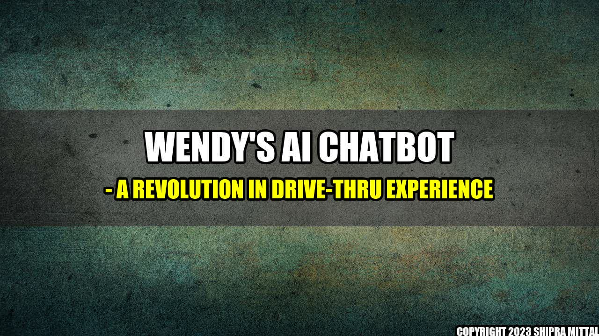

Wendy's AI Chatbot - A Revolution in Drive-Thru Experience
Wendy's, the famous American fast food chain, has always been at the forefront of innovation. And they've done it again - by becoming the first fast food chain to bring a Google-powered AI chatbot to its drive-thrus. This is not only a game-changer for Wendy's, but also for the entire fast food industry.

What Is Wendy's AI Chatbot?
Wendy's AI Chatbot is a sophisticated Artificial Intelligence system, powered by Google, that interacts with customers at its drive-thrus. This system uses voice recognition technology to understand customers' orders, and it has been designed to make the ordering experience faster, easier, and more accurate.
How Does It Work?
When a customer drives up to a Wendy's drive-thru, they will be greeted by Wendy's AI Chatbot. The Chatbot will ask the customer what they would like to order, and the customer will respond with their order. The Chatbot will confirm the order, and the customer will then proceed to the payment window to finish the transaction. It's that simple!
The AI system has been specifically trained to understand a variety of accents and dialects, so customers don't have to worry about any language barriers. And because it's an AI system, it never gets tired or forgets orders – ensuring that the ordering process is not only faster, but more accurate as well.
- According to Wendy's, the AI system has reduced the average time it takes to place an order by more than 20 seconds.
- The system has also been tested in noisy environments, such as near highways, and has proven to be effective in understanding customer orders.
- Not only does the AI system speed up the ordering process, but it also reduces errors in orders – ultimately leading to happier customers.
I recently visited a Wendy's drive-thru that was equipped with the AI Chatbot, and I was amazed at how well it worked. I have a thick accent, and I was worried that the Chatbot would have a hard time understanding my order. But to my surprise, the Chatbot understood me perfectly, and my order was correct. The best part was that the ordering process was much faster than usual, and I was on my way in no time.
Conclusion
Wendy's AI Chatbot is a game-changer for the fast food industry. It not only speeds up the ordering process, but it also reduces errors in orders – leading to happier customers. Here are the three main takeaways from Wendy's AI Chatbot:
- Wendy's AI Chatbot has reduced the average time it takes to place an order by more than 20 seconds.
- The system has been tested in noisy environments, and has proven to be effective in understanding customer orders.
- Wendy's AI Chatbot ultimately leads to happier customers, as it reduces errors in orders, and makes the ordering process much faster and more efficient.
Akash Mittal Tech Article
Share on Twitter Share on LinkedIn